Next: Sample Run
Up: stokes: Stokesian Dynamics Simulator
Previous: Parameter Script
xi3:
Tuning Program for the Ewald Summation
xi3 in RYUON-stokes package
is a tuning program for ewald summation parameter 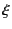.
For simplicity, here we show the equation for F version.
 |
|
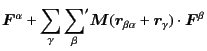 |
(2.20) |
| |
|
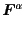 |
(2.21) |
| |
|
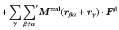 |
(2.22) |
| |
|
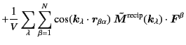 |
(2.23) |
| |
|
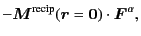 |
(2.24) |
where 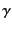 is a index of lattice vector
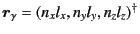
for arbitrary integers
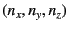,
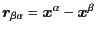.
The prime on the summation of particle 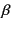 in real-space lattice sum
means that the self part (
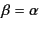) is excluded
for the primary cell
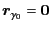.
The mobility matrix
is so called
Rotne-Prager-Yamakawa tensor given by
| 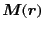 |
|
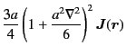 |
(2.25) |
| |
|
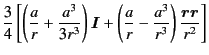 |
(2.26) |
| |
|
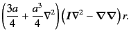 |
(2.27) |
Because it is long-range interaction proportional to 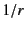,
we need to take huge number of periodic images.
The trick of Ewald summation technique is that
using the identity
we split
into two parts,
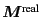 and
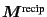 as
| 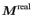 |
|
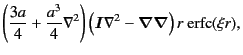 |
(2.29) |
| 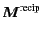 |
|
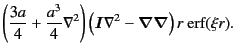 |
(2.30) |
Because the error function
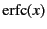 decays exponentially,
we can truncate the lattice summation of for
at some point.
Similarly, in reciprocal space,
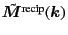
decays exponentially in  so that we can truncate the lattice sum
of 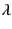 at some point.
so that we can truncate the lattice sum
of 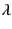 at some point.
Mathematically, the parameter introduced in
Eqs. (2.29) and (2.30)
is arbitrary. It specify how fast
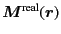 decays
and how slow
decays.
Practically, on the other hand, we can choose the optimal value of
so that the calculation time is minimal.
Subsections
Next: Sample Run
Up: stokes: Stokesian Dynamics Simulator
Previous: Parameter Script
Kengo Ichiki 2008-10-12